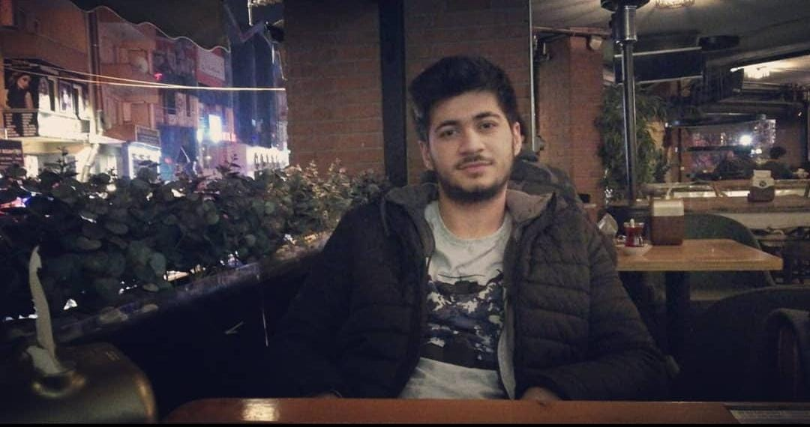

ÖZGEÇMİŞ
Ersin Karakulak-22
Ben ne yaparım?
EĞİTİM
| Okul | Yıl | Şehir |
|---|---|---|
| Kızılpınar İlkokulu | 2006-2013 | Tekirdağ |
| Kızılpınar Anadolu Lisesi | 2013-2017 | Tekirdağ |
| Uludağ Üniversitesi/Bilgisayar Mühendisliği | 2018-2020 | Bursa |
| Sakarya Üniversitesi/Bilgisayar Mühendisliği | 2020-Devam ediyor. | Sakarya |
İŞ TECRÜBESİ
| Çalıştığı yer | Çalışma tarihi | Görevi |
|---|---|---|
| LC Waikiki | Haziran 2020 - Aralık 2020 | Depo operatörü |
| Topdal Plastik | Ağustos 2018 - Eylül 2018 | Enjeksiyon Operatörü |
DİL YETKİNLİĞİ
| Dil | Seviyesi | Nerede Öğrendiği |
|---|---|---|
| Türkçe | Ana dil | Günlük yaşam |
| İngilizce | Orta seviye | Okul |
| Almanca | Başlangıç seviyesi | Okul |
BECERİLER
| Kodlama dili | Seviyesi | Yaptığı proje(varsa) |
|---|---|---|
| C# | Orta seviye | PostreSql'e bağlanıp form uygulaması |
| Java | Düşük seviye | - |
| Pyhton | Orta seviyesi | Borsa verilerini getiren uygulama |